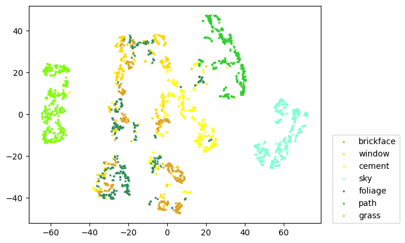
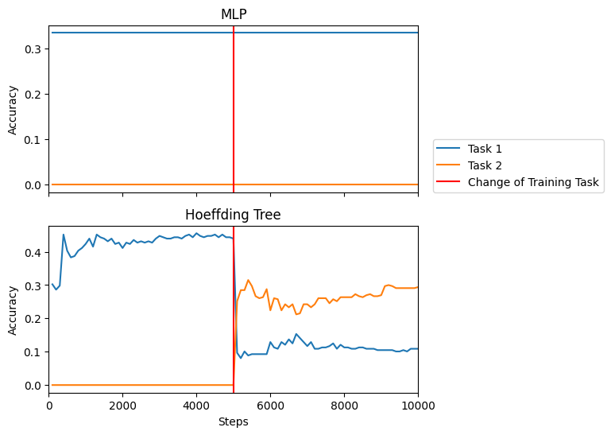

Label Shift¶


from river.datasets import ImageSegments
from river.preprocessing import MinMaxScaler
from river.tree import HoeffdingTreeClassifier
from deep_river.classification import Classifier
from torch import nn
from tqdm import tqdm
import matplotlib.pyplot as plt
import torch
import numpy as np
import random
from sklearn.model_selection import train_test_split
from sklearn.metrics import accuracy_score
from sklearn.utils import resample
from sklearn.manifold import TSNE
random.seed(0)
Create Stream¶
stream_size = 10_000
x, y = list(zip(*ImageSegments()))
x = np.array(x)
y = np.array(y)
# Divide classes into two task specific sets
task_classes = [
["brickface", "window", "cement"],
["sky", "foliage", "path", "grass"],
]
# Divide all samples into their specific tasks
data_train = []
data_test = []
for classes_t in task_classes:
x_t = np.concatenate([x[y == c] for c in classes_t])
y_t = np.concatenate([330 * [c] for c in classes_t])
x_train, x_test, y_train, y_test = train_test_split(
x_t, y_t, test_size=0.25, stratify=y_t
)
x_train, y_train = resample(
x_train, y_train, n_samples=int(stream_size / 2), stratify=y_train
)
data_train.append(list(zip(x_train, y_train)))
data_test.append(list(zip(x_test, y_test)))
data_train = data_train[0] + data_train[1]
Visualize Data¶
classnames = task_classes[0] + task_classes[1]
tsne = TSNE(init="pca", learning_rate="auto", n_jobs=-1)
x_array = np.array([list(x_i.values()) for x_i in x])
x_viz = tsne.fit_transform(x_array)
/Users/cedrickulbach/Documents/Projects/deep-river/.venv/lib/python3.10/site-packages/threadpoolctl.py:1226: RuntimeWarning:
Found Intel OpenMP ('libiomp') and LLVM OpenMP ('libomp') loaded at
the same time. Both libraries are known to be incompatible and this
can cause random crashes or deadlocks on Linux when loaded in the
same Python program.
Using threadpoolctl may cause crashes or deadlocks. For more
information and possible workarounds, please see
https://github.com/joblib/threadpoolctl/blob/master/multiple_openmp.md
warnings.warn(msg, RuntimeWarning)
fig, ax = plt.subplots()
cm = [
"goldenrod",
"gold",
"yellow",
"aquamarine",
"seagreen",
"limegreen",
"lawngreen",
]
for c_idx, x_c in enumerate([x_viz[y == c] for c in classnames]):
scatter = ax.scatter(
x_c[:, 0],
x_c[:, 1],
c=len(x_c) * [cm[c_idx]],
s=3,
alpha=0.8,
label=classnames[c_idx],
)
ax.legend(loc=(1.04, 0))
<matplotlib.legend.Legend at 0x12a0473a0>

Define evaluation procedure¶
# Define function to calculate accuracy on testing data for each task
def get_test_accuracy(model, data_test):
results = []
for data_test_i in data_test:
ys = []
y_preds = []
for x_test, y_test in data_test_i:
ys.append(y_test)
y_preds.append(model.predict_one(x_test))
accuracy = accuracy_score(ys, y_preds)
results.append(accuracy)
return results
# Define training and testing loop
def eval_separate_testing(model, data_train, data_test):
scaler = MinMaxScaler()
step = 0
steps = []
results = [[] for task in data_test]
for x, y in tqdm(data_train):
step += 1
scaler.learn_one(x)
x = scaler.transform_one(x)
model.learn_one(x, y)
if step % 100 == 0:
test_accuracies = get_test_accuracy(model, data_test)
for idx, accuracy in enumerate(test_accuracies):
results[idx].append(accuracy)
steps.append(step)
return steps, results
Evaluate Classifiers¶
# Evaluate a simple MLP classifier
class SimpleMLP(nn.Module):
def __init__(self, n_features):
super(SimpleMLP, self).__init__()
self.dense0 = nn.Linear(n_features, 5)
self.nonlin = nn.ReLU()
self.dense1 = nn.Linear(5, 2)
self.softmax = nn.Softmax(dim=-1)
def forward(self, X, **kwargs):
X = self.nonlin(self.dense0(X))
X = self.nonlin(self.dense1(X))
X = self.softmax(X)
return X
mlp = Classifier(
SimpleMLP(30),
loss_fn="binary_cross_entropy_with_logits",
optimizer_fn="sgd",
lr=0.05,
seed=42,
)
steps, results_mlp = eval_separate_testing(mlp, data_train, data_test)
0%| | 0/10000 [00:00<?, ?it/s]
1%|█▉ | 69/10000 [00:00<00:14, 685.95it/s]
1%|███▊ | 138/10000 [00:00<00:17, 570.05it/s]
2%|█████▍ | 200/10000 [00:00<00:17, 545.43it/s]
3%|████████▏ | 300/10000 [00:00<00:15, 612.60it/s]
4%|██████████▉ | 400/10000 [00:00<00:14, 652.04it/s]
5%|█████████████▋ | 500/10000 [00:00<00:14, 677.48it/s]
6%|████████████████▍ | 600/10000 [00:00<00:13, 697.60it/s]
7%|███████████████████▏ | 700/10000 [00:01<00:13, 706.66it/s]
8%|█████████████████████▉ | 800/10000 [00:01<00:12, 707.89it/s]
9%|████████████████████████▋ | 900/10000 [00:01<00:12, 710.96it/s]
10%|███████████████████████████▎ | 1000/10000 [00:01<00:12, 715.83it/s]
11%|██████████████████████████████ | 1100/10000 [00:01<00:12, 719.11it/s]
12%|████████████████████████████████▊ | 1200/10000 [00:01<00:12, 714.52it/s]
13%|███████████████████████████████████▍ | 1300/10000 [00:01<00:12, 720.39it/s]
14%|██████████████████████████████████████▏ | 1400/10000 [00:02<00:11, 725.33it/s]
15%|████████████████████████████████████████▉ | 1500/10000 [00:02<00:11, 729.43it/s]
16%|███████████████████████████████████████████▋ | 1600/10000 [00:02<00:11, 724.98it/s]
17%|██████████████████████████████████████████████▍ | 1700/10000 [00:02<00:11, 730.61it/s]
18%|█████████████████████████████████████████████████▏ | 1800/10000 [00:02<00:11, 731.66it/s]
19%|███████████████████████████████████████████████████▊ | 1900/10000 [00:02<00:11, 731.59it/s]
20%|██████████████████████████████████████████████████████▌ | 2000/10000 [00:02<00:11, 724.02it/s]
21%|█████████████████████████████████████████████████████████▎ | 2100/10000 [00:02<00:10, 725.22it/s]
22%|████████████████████████████████████████████████████████████ | 2200/10000 [00:03<00:10, 727.33it/s]
23%|██████████████████████████████████████████████████████████████▊ | 2300/10000 [00:03<00:10, 723.26it/s]
24%|█████████████████████████████████████████████████████████████████▌ | 2400/10000 [00:03<00:10, 724.41it/s]
25%|████████████████████████████████████████████████████████████████████▎ | 2500/10000 [00:03<00:10, 724.99it/s]
26%|██████████████████████████████████████████████████████████████████████▉ | 2600/10000 [00:03<00:10, 718.48it/s]
27%|█████████████████████████████████████████████████████████████████████████▋ | 2700/10000 [00:03<00:10, 715.51it/s]
28%|████████████████████████████████████████████████████████████████████████████▍ | 2800/10000 [00:03<00:10, 711.16it/s]
29%|███████████████████████████████████████████████████████████████████████████████▏ | 2900/10000 [00:04<00:10, 707.47it/s]
30%|█████████████████████████████████████████████████████████████████████████████████▉ | 3000/10000 [00:04<00:09, 711.05it/s]
31%|████████████████████████████████████████████████████████████████████████████████████▋ | 3100/10000 [00:04<00:09, 720.73it/s]
32%|███████████████████████████████████████████████████████████████████████████████████████▎ | 3200/10000 [00:04<00:09, 726.98it/s]
33%|██████████████████████████████████████████████████████████████████████████████████████████ | 3300/10000 [00:04<00:09, 725.48it/s]
34%|████████████████████████████████████████████████████████████████████████████████████████████▊ | 3400/10000 [00:04<00:09, 723.70it/s]
35%|███████████████████████████████████████████████████████████████████████████████████████████████▌ | 3500/10000 [00:04<00:08, 723.37it/s]
36%|██████████████████████████████████████████████████████████████████████████████████████████████████▎ | 3600/10000 [00:05<00:08, 726.41it/s]
37%|█████████████████████████████████████████████████████████████████████████████████████████████████████ | 3700/10000 [00:05<00:08, 725.35it/s]
38%|███████████████████████████████████████████████████████████████████████████████████████████████████████▋ | 3800/10000 [00:05<00:08, 725.04it/s]
39%|██████████████████████████████████████████████████████████████████████████████████████████████████████████▍ | 3900/10000 [00:05<00:08, 726.09it/s]
40%|█████████████████████████████████████████████████████████████████████████████████████████████████████████████▏ | 4000/10000 [00:05<00:08, 727.37it/s]
41%|███████████████████████████████████████████████████████████████████████████████████████████████████████████████▉ | 4100/10000 [00:05<00:08, 718.48it/s]
42%|██████████████████████████████████████████████████████████████████████████████████████████████████████████████████▋ | 4200/10000 [00:05<00:08, 718.17it/s]
43%|█████████████████████████████████████████████████████████████████████████████████████████████████████████████████████▍ | 4300/10000 [00:06<00:07, 714.67it/s]
44%|████████████████████████████████████████████████████████████████████████████████████████████████████████████████████████ | 4400/10000 [00:06<00:07, 714.03it/s]
45%|██████████████████████████████████████████████████████████████████████████████████████████████████████████████████████████▊ | 4500/10000 [00:06<00:07, 715.29it/s]
46%|█████████████████████████████████████████████████████████████████████████████████████████████████████████████████████████████▌ | 4600/10000 [00:06<00:07, 717.06it/s]
47%|████████████████████████████████████████████████████████████████████████████████████████████████████████████████████████████████▎ | 4700/10000 [00:06<00:07, 718.95it/s]
48%|███████████████████████████████████████████████████████████████████████████████████████████████████████████████████████████████████ | 4800/10000 [00:06<00:07, 717.98it/s]
49%|█████████████████████████████████████████████████████████████████████████████████████████████████████████████████████████████████████▊ | 4900/10000 [00:06<00:07, 721.21it/s]
50%|████████████████████████████████████████████████████████████████████████████████████████████████████████████████████████████████████████▌ | 5000/10000 [00:07<00:06, 718.23it/s]
51%|███████████████████████████████████████████████████████████████████████████████████████████████████████████████████████████████████████████▏ | 5100/10000 [00:07<00:06, 720.99it/s]
52%|█████████████████████████████████████████████████████████████████████████████████████████████████████████████████████████████████████████████▉ | 5200/10000 [00:07<00:06, 727.76it/s]
53%|████████████████████████████████████████████████████████████████████████████████████████████████████████████████████████████████████████████████▋ | 5300/10000 [00:07<00:06, 733.60it/s]
54%|███████████████████████████████████████████████████████████████████████████████████████████████████████████████████████████████████████████████████▍ | 5400/10000 [00:07<00:06, 730.01it/s]
55%|██████████████████████████████████████████████████████████████████████████████████████████████████████████████████████████████████████████████████████▏ | 5500/10000 [00:07<00:06, 728.19it/s]
56%|████████████████████████████████████████████████████████████████████████████████████████████████████████████████████████████████████████████████████████▉ | 5600/10000 [00:07<00:06, 728.66it/s]
57%|███████████████████████████████████████████████████████████████████████████████████████████████████████████████████████████████████████████████████████████▌ | 5700/10000 [00:07<00:05, 734.48it/s]
58%|██████████████████████████████████████████████████████████████████████████████████████████████████████████████████████████████████████████████████████████████▎ | 5800/10000 [00:08<00:05, 736.69it/s]
59%|█████████████████████████████████████████████████████████████████████████████████████████████████████████████████████████████████████████████████████████████████ | 5900/10000 [00:08<00:05, 734.05it/s]
60%|███████████████████████████████████████████████████████████████████████████████████████████████████████████████████████████████████████████████████████████████████▊ | 6000/10000 [00:08<00:05, 726.54it/s]
61%|██████████████████████████████████████████████████████████████████████████████████████████████████████████████████████████████████████████████████████████████████████▌ | 6100/10000 [00:08<00:05, 729.96it/s]
62%|█████████████████████████████████████████████████████████████████████████████████████████████████████████████████████████████████████████████████████████████████████████▎ | 6200/10000 [00:08<00:05, 727.93it/s]
63%|███████████████████████████████████████████████████████████████████████████████████████████████████████████████████████████████████████████████████████████████████████████▉ | 6300/10000 [00:08<00:05, 725.29it/s]
64%|██████████████████████████████████████████████████████████████████████████████████████████████████████████████████████████████████████████████████████████████████████████████▋ | 6400/10000 [00:08<00:04, 720.41it/s]
65%|█████████████████████████████████████████████████████████████████████████████████████████████████████████████████████████████████████████████████████████████████████████████████▍ | 6500/10000 [00:09<00:04, 716.23it/s]
66%|████████████████████████████████████████████████████████████████████████████████████████████████████████████████████████████████████████████████████████████████████████████████████▏ | 6600/10000 [00:09<00:04, 714.90it/s]
67%|██████████████████████████████████████████████████████████████████████████████████████████████████████████████████████████████████████████████████████████████████████████████████████▉ | 6700/10000 [00:09<00:04, 719.91it/s]
68%|█████████████████████████████████████████████████████████████████████████████████████████████████████████████████████████████████████████████████████████████████████████████████████████▋ | 6800/10000 [00:09<00:04, 711.00it/s]
69%|████████████████████████████████████████████████████████████████████████████████████████████████████████████████████████████████████████████████████████████████████████████████████████████▎ | 6900/10000 [00:09<00:04, 714.57it/s]
70%|███████████████████████████████████████████████████████████████████████████████████████████████████████████████████████████████████████████████████████████████████████████████████████████████ | 7000/10000 [00:09<00:04, 713.78it/s]
71%|█████████████████████████████████████████████████████████████████████████████████████████████████████████████████████████████████████████████████████████████████████████████████████████████████▊ | 7100/10000 [00:09<00:04, 715.64it/s]
72%|████████████████████████████████████████████████████████████████████████████████████████████████████████████████████████████████████████████████████████████████████████████████████████████████████▌ | 7200/10000 [00:10<00:03, 720.31it/s]
73%|███████████████████████████████████████████████████████████████████████████████████████████████████████████████████████████████████████████████████████████████████████████████████████████████████████▎ | 7300/10000 [00:10<00:03, 720.78it/s]
74%|██████████████████████████████████████████████████████████████████████████████████████████████████████████████████████████████████████████████████████████████████████████████████████████████████████████ | 7400/10000 [00:10<00:03, 724.48it/s]
75%|████████████████████████████████████████████████████████████████████████████████████████████████████████████████████████████████████████████████████████████████████████████████████████████████████████████▊ | 7500/10000 [00:10<00:03, 731.97it/s]
76%|███████████████████████████████████████████████████████████████████████████████████████████████████████████████████████████████████████████████████████████████████████████████████████████████████████████████▍ | 7600/10000 [00:10<00:03, 733.21it/s]
77%|██████████████████████████████████████████████████████████████████████████████████████████████████████████████████████████████████████████████████████████████████████████████████████████████████████████████████▏ | 7700/10000 [00:10<00:03, 728.36it/s]
78%|████████████████████████████████████████████████████████████████████████████████████████████████████████████████████████████████████████████████████████████████████████████████████████████████████████████████████▉ | 7800/10000 [00:10<00:03, 725.22it/s]
79%|███████████████████████████████████████████████████████████████████████████████████████████████████████████████████████████████████████████████████████████████████████████████████████████████████████████████████████▋ | 7900/10000 [00:11<00:02, 730.16it/s]
80%|██████████████████████████████████████████████████████████████████████████████████████████████████████████████████████████████████████████████████████████████████████████████████████████████████████████████████████████▍ | 8000/10000 [00:11<00:02, 730.76it/s]
81%|█████████████████████████████████████████████████████████████████████████████████████████████████████████████████████████████████████████████████████████████████████████████████████████████████████████████████████████████▏ | 8100/10000 [00:11<00:02, 726.85it/s]
82%|███████████████████████████████████████████████████████████████████████████████████████████████████████████████████████████████████████████████████████████████████████████████████████████████████████████████████████████████▊ | 8200/10000 [00:11<00:02, 729.65it/s]
83%|██████████████████████████████████████████████████████████████████████████████████████████████████████████████████████████████████████████████████████████████████████████████████████████████████████████████████████████████████▌ | 8300/10000 [00:11<00:02, 731.08it/s]
84%|█████████████████████████████████████████████████████████████████████████████████████████████████████████████████████████████████████████████████████████████████████████████████████████████████████████████████████████████████████▎ | 8400/10000 [00:11<00:02, 728.56it/s]
85%|████████████████████████████████████████████████████████████████████████████████████████████████████████████████████████████████████████████████████████████████████████████████████████████████████████████████████████████████████████ | 8500/10000 [00:11<00:02, 726.54it/s]
86%|██████████████████████████████████████████████████████████████████████████████████████████████████████████████████████████████████████████████████████████████████████████████████████████████████████████████████████████████████████████▊ | 8600/10000 [00:11<00:01, 726.78it/s]
87%|█████████████████████████████████████████████████████████████████████████████████████████████████████████████████████████████████████████████████████████████████████████████████████████████████████████████████████████████████████████████▌ | 8700/10000 [00:12<00:01, 722.58it/s]
88%|████████████████████████████████████████████████████████████████████████████████████████████████████████████████████████████████████████████████████████████████████████████████████████████████████████████████████████████████████████████████▏ | 8800/10000 [00:12<00:01, 722.56it/s]
89%|██████████████████████████████████████████████████████████████████████████████████████████████████████████████████████████████████████████████████████████████████████████████████████████████████████████████████████████████████████████████████▉ | 8900/10000 [00:12<00:01, 729.12it/s]
90%|█████████████████████████████████████████████████████████████████████████████████████████████████████████████████████████████████████████████████████████████████████████████████████████████████████████████████████████████████████████████████████▋ | 9000/10000 [00:12<00:01, 730.73it/s]
91%|████████████████████████████████████████████████████████████████████████████████████████████████████████████████████████████████████████████████████████████████████████████████████████████████████████████████████████████████████████████████████████▍ | 9100/10000 [00:12<00:01, 724.52it/s]
92%|███████████████████████████████████████████████████████████████████████████████████████████████████████████████████████████████████████████████████████████████████████████████████████████████████████████████████████████████████████████████████████████▏ | 9200/10000 [00:12<00:01, 727.33it/s]
93%|█████████████████████████████████████████████████████████████████████████████████████████████████████████████████████████████████████████████████████████████████████████████████████████████████████████████████████████████████████████████████████████████▉ | 9300/10000 [00:12<00:00, 732.37it/s]
94%|████████████████████████████████████████████████████████████████████████████████████████████████████████████████████████████████████████████████████████████████████████████████████████████████████████████████████████████████████████████████████████████████▌ | 9400/10000 [00:13<00:00, 724.89it/s]
95%|███████████████████████████████████████████████████████████████████████████████████████████████████████████████████████████████████████████████████████████████████████████████████████████████████████████████████████████████████████████████████████████████████▎ | 9500/10000 [00:13<00:00, 724.31it/s]
96%|██████████████████████████████████████████████████████████████████████████████████████████████████████████████████████████████████████████████████████████████████████████████████████████████████████████████████████████████████████████████████████████████████████ | 9600/10000 [00:13<00:00, 725.36it/s]
97%|████████████████████████████████████████████████████████████████████████████████████████████████████████████████████████████████████████████████████████████████████████████████████████████████████████████████████████████████████████████████████████████████████████▊ | 9700/10000 [00:13<00:00, 734.79it/s]
98%|███████████████████████████████████████████████████████████████████████████████████████████████████████████████████████████████████████████████████████████████████████████████████████████████████████████████████████████████████████████████████████████████████████████▌ | 9800/10000 [00:13<00:00, 732.25it/s]
99%|██████████████████████████████████████████████████████████████████████████████████████████████████████████████████████████████████████████████████████████████████████████████████████████████████████████████████████████████████████████████████████████████████████████████▎ | 9900/10000 [00:13<00:00, 723.37it/s]
100%|████████████████████████████████████████████████████████████████████████████████████████████████████████████████████████████████████████████████████████████████████████████████████████████████████████████████████████████████████████████████████████████████████████████████| 10000/10000 [00:13<00:00, 725.18it/s]
100%|████████████████████████████████████████████████████████████████████████████████████████████████████████████████████████████████████████████████████████████████████████████████████████████████████████████████████████████████████████████████████████████████████████████████| 10000/10000 [00:13<00:00, 719.72it/s]
# Evaluate a Hoeffding Tree classifier
tree = HoeffdingTreeClassifier(tau=0.05)
steps, results_tree = eval_separate_testing(tree, data_train, data_test)
0%| | 0/10000 [00:00<?, ?it/s]
2%|█████▍ | 200/10000 [00:00<00:06, 1401.48it/s]
4%|██████████▉ | 400/10000 [00:00<00:06, 1413.79it/s]
6%|████████████████▍ | 600/10000 [00:00<00:06, 1417.47it/s]
8%|█████████████████████▊ | 800/10000 [00:00<00:06, 1408.06it/s]
10%|███████████████████████████▏ | 1000/10000 [00:00<00:06, 1410.37it/s]
12%|████████████████████████████████▋ | 1200/10000 [00:00<00:06, 1426.35it/s]
14%|██████████████████████████████████████ | 1400/10000 [00:00<00:05, 1449.83it/s]
16%|███████████████████████████████████████████▌ | 1600/10000 [00:01<00:05, 1470.42it/s]
18%|████████████████████████████████████████████████▉ | 1800/10000 [00:01<00:05, 1461.60it/s]
20%|██████████████████████████████████████████████████████▍ | 2000/10000 [00:01<00:05, 1465.54it/s]
22%|███████████████████████████████████████████████████████████▊ | 2200/10000 [00:01<00:05, 1467.96it/s]
24%|█████████████████████████████████████████████████████████████████▎ | 2400/10000 [00:01<00:05, 1458.74it/s]
26%|██████████████████████████████████████████████████████████████████████▋ | 2600/10000 [00:01<00:05, 1438.14it/s]
28%|████████████████████████████████████████████████████████████████████████████▏ | 2800/10000 [00:01<00:05, 1439.49it/s]
30%|█████████████████████████████████████████████████████████████████████████████████▌ | 3000/10000 [00:02<00:04, 1455.77it/s]
32%|███████████████████████████████████████████████████████████████████████████████████████ | 3200/10000 [00:02<00:04, 1460.67it/s]
34%|████████████████████████████████████████████████████████████████████████████████████████████▍ | 3400/10000 [00:02<00:04, 1459.35it/s]
36%|█████████████████████████████████████████████████████████████████████████████████████████████████▉ | 3600/10000 [00:02<00:04, 1462.91it/s]
38%|███████████████████████████████████████████████████████████████████████████████████████████████████████▎ | 3800/10000 [00:02<00:04, 1474.20it/s]
40%|████████████████████████████████████████████████████████████████████████████████████████████████████████████▊ | 4000/10000 [00:02<00:04, 1471.10it/s]
42%|██████████████████████████████████████████████████████████████████████████████████████████████████████████████████▏ | 4200/10000 [00:02<00:03, 1474.92it/s]
44%|███████████████████████████████████████████████████████████████████████████████████████████████████████████████████████▋ | 4400/10000 [00:03<00:03, 1481.42it/s]
46%|█████████████████████████████████████████████████████████████████████████████████████████████████████████████████████████████ | 4600/10000 [00:03<00:03, 1482.57it/s]
48%|██████████████████████████████████████████████████████████████████████████████████████████████████████████████████████████████████▌ | 4800/10000 [00:03<00:03, 1471.34it/s]
50%|████████████████████████████████████████████████████████████████████████████████████████████████████████████████████████████████████████ | 5000/10000 [00:03<00:03, 1473.30it/s]
51%|████████████████████████████████████████████████████████████████████████████████████████████████████████████████████████████████████████████ | 5148/10000 [00:03<00:03, 1310.80it/s]
53%|███████████████████████████████████████████████████████████████████████████████████████████████████████████████████████████████████████████████▋ | 5281/10000 [00:03<00:04, 1171.86it/s]
54%|███████████████████████████████████████████████████████████████████████████████████████████████████████████████████████████████████████████████████▍ | 5400/10000 [00:04<00:05, 852.98it/s]
55%|██████████████████████████████████████████████████████████████████████████████████████████████████████████████████████████████████████████████████████▏ | 5500/10000 [00:04<00:05, 806.85it/s]
56%|████████████████████████████████████████████████████████████████████████████████████████████████████████████████████████████████████████████████████████▉ | 5600/10000 [00:04<00:05, 774.61it/s]
57%|███████████████████████████████████████████████████████████████████████████████████████████████████████████████████████████████████████████████████████████▌ | 5700/10000 [00:04<00:05, 755.04it/s]
58%|██████████████████████████████████████████████████████████████████████████████████████████████████████████████████████████████████████████████████████████████▎ | 5800/10000 [00:04<00:05, 737.85it/s]
59%|█████████████████████████████████████████████████████████████████████████████████████████████████████████████████████████████████████████████████████████████████ | 5900/10000 [00:04<00:05, 727.15it/s]
60%|███████████████████████████████████████████████████████████████████████████████████████████████████████████████████████████████████████████████████████████████████▊ | 6000/10000 [00:04<00:05, 717.58it/s]
61%|██████████████████████████████████████████████████████████████████████████████████████████████████████████████████████████████████████████████████████████████████████▌ | 6100/10000 [00:05<00:05, 722.86it/s]
62%|█████████████████████████████████████████████████████████████████████████████████████████████████████████████████████████████████████████████████████████████████████████▎ | 6200/10000 [00:05<00:05, 715.20it/s]
63%|███████████████████████████████████████████████████████████████████████████████████████████████████████████████████████████████████████████████████████████████████████████▉ | 6300/10000 [00:05<00:05, 714.08it/s]
64%|██████████████████████████████████████████████████████████████████████████████████████████████████████████████████████████████████████████████████████████████████████████████▋ | 6400/10000 [00:05<00:05, 709.24it/s]
65%|█████████████████████████████████████████████████████████████████████████████████████████████████████████████████████████████████████████████████████████████████████████████████▍ | 6500/10000 [00:05<00:04, 712.84it/s]
66%|████████████████████████████████████████████████████████████████████████████████████████████████████████████████████████████████████████████████████████████████████████████████████▏ | 6600/10000 [00:05<00:04, 709.04it/s]
67%|██████████████████████████████████████████████████████████████████████████████████████████████████████████████████████████████████████████████████████████████████████████████████████▉ | 6700/10000 [00:05<00:04, 704.78it/s]
68%|█████████████████████████████████████████████████████████████████████████████████████████████████████████████████████████████████████████████████████████████████████████████████████████▋ | 6800/10000 [00:06<00:04, 691.27it/s]
69%|████████████████████████████████████████████████████████████████████████████████████████████████████████████████████████████████████████████████████████████████████████████████████████████▎ | 6900/10000 [00:06<00:04, 691.39it/s]
70%|███████████████████████████████████████████████████████████████████████████████████████████████████████████████████████████████████████████████████████████████████████████████████████████████ | 7000/10000 [00:06<00:04, 689.06it/s]
71%|█████████████████████████████████████████████████████████████████████████████████████████████████████████████████████████████████████████████████████████████████████████████████████████████████▊ | 7100/10000 [00:06<00:04, 695.43it/s]
72%|████████████████████████████████████████████████████████████████████████████████████████████████████████████████████████████████████████████████████████████████████████████████████████████████████▌ | 7200/10000 [00:06<00:04, 699.39it/s]
73%|███████████████████████████████████████████████████████████████████████████████████████████████████████████████████████████████████████████████████████████████████████████████████████████████████████▎ | 7300/10000 [00:06<00:03, 703.98it/s]
74%|██████████████████████████████████████████████████████████████████████████████████████████████████████████████████████████████████████████████████████████████████████████████████████████████████████████ | 7400/10000 [00:06<00:03, 697.86it/s]
75%|████████████████████████████████████████████████████████████████████████████████████████████████████████████████████████████████████████████████████████████████████████████████████████████████████████████▊ | 7500/10000 [00:07<00:03, 704.38it/s]
76%|███████████████████████████████████████████████████████████████████████████████████████████████████████████████████████████████████████████████████████████████████████████████████████████████████████████████▍ | 7600/10000 [00:07<00:03, 704.23it/s]
77%|██████████████████████████████████████████████████████████████████████████████████████████████████████████████████████████████████████████████████████████████████████████████████████████████████████████████████▏ | 7700/10000 [00:07<00:03, 709.88it/s]
78%|████████████████████████████████████████████████████████████████████████████████████████████████████████████████████████████████████████████████████████████████████████████████████████████████████████████████████▉ | 7800/10000 [00:07<00:03, 709.48it/s]
79%|███████████████████████████████████████████████████████████████████████████████████████████████████████████████████████████████████████████████████████████████████████████████████████████████████████████████████████▋ | 7900/10000 [00:07<00:02, 713.03it/s]
80%|██████████████████████████████████████████████████████████████████████████████████████████████████████████████████████████████████████████████████████████████████████████████████████████████████████████████████████████▍ | 8000/10000 [00:07<00:02, 710.40it/s]
81%|█████████████████████████████████████████████████████████████████████████████████████████████████████████████████████████████████████████████████████████████████████████████████████████████████████████████████████████████▏ | 8100/10000 [00:07<00:02, 704.92it/s]
82%|███████████████████████████████████████████████████████████████████████████████████████████████████████████████████████████████████████████████████████████████████████████████████████████████████████████████████████████████▊ | 8200/10000 [00:07<00:02, 699.53it/s]
83%|██████████████████████████████████████████████████████████████████████████████████████████████████████████████████████████████████████████████████████████████████████████████████████████████████████████████████████████████████▌ | 8300/10000 [00:08<00:02, 696.32it/s]
84%|█████████████████████████████████████████████████████████████████████████████████████████████████████████████████████████████████████████████████████████████████████████████████████████████████████████████████████████████████████▎ | 8400/10000 [00:08<00:02, 695.14it/s]
85%|████████████████████████████████████████████████████████████████████████████████████████████████████████████████████████████████████████████████████████████████████████████████████████████████████████████████████████████████████████ | 8500/10000 [00:08<00:02, 691.13it/s]
86%|██████████████████████████████████████████████████████████████████████████████████████████████████████████████████████████████████████████████████████████████████████████████████████████████████████████████████████████████████████████▊ | 8600/10000 [00:08<00:02, 690.11it/s]
87%|█████████████████████████████████████████████████████████████████████████████████████████████████████████████████████████████████████████████████████████████████████████████████████████████████████████████████████████████████████████████▌ | 8700/10000 [00:08<00:01, 688.53it/s]
88%|████████████████████████████████████████████████████████████████████████████████████████████████████████████████████████████████████████████████████████████████████████████████████████████████████████████████████████████████████████████████▏ | 8800/10000 [00:08<00:01, 685.43it/s]
89%|██████████████████████████████████████████████████████████████████████████████████████████████████████████████████████████████████████████████████████████████████████████████████████████████████████████████████████████████████████████████████▉ | 8900/10000 [00:09<00:01, 695.61it/s]
90%|█████████████████████████████████████████████████████████████████████████████████████████████████████████████████████████████████████████████████████████████████████████████████████████████████████████████████████████████████████████████████████▋ | 9000/10000 [00:09<00:01, 699.90it/s]
91%|████████████████████████████████████████████████████████████████████████████████████████████████████████████████████████████████████████████████████████████████████████████████████████████████████████████████████████████████████████████████████████▍ | 9100/10000 [00:09<00:01, 703.52it/s]
92%|███████████████████████████████████████████████████████████████████████████████████████████████████████████████████████████████████████████████████████████████████████████████████████████████████████████████████████████████████████████████████████████▏ | 9200/10000 [00:09<00:01, 701.34it/s]
93%|█████████████████████████████████████████████████████████████████████████████████████████████████████████████████████████████████████████████████████████████████████████████████████████████████████████████████████████████████████████████████████████████▉ | 9300/10000 [00:09<00:00, 708.38it/s]
94%|████████████████████████████████████████████████████████████████████████████████████████████████████████████████████████████████████████████████████████████████████████████████████████████████████████████████████████████████████████████████████████████████▌ | 9400/10000 [00:09<00:00, 706.90it/s]
95%|███████████████████████████████████████████████████████████████████████████████████████████████████████████████████████████████████████████████████████████████████████████████████████████████████████████████████████████████████████████████████████████████████▎ | 9500/10000 [00:09<00:00, 702.33it/s]
96%|██████████████████████████████████████████████████████████████████████████████████████████████████████████████████████████████████████████████████████████████████████████████████████████████████████████████████████████████████████████████████████████████████████ | 9600/10000 [00:10<00:00, 697.37it/s]
97%|████████████████████████████████████████████████████████████████████████████████████████████████████████████████████████████████████████████████████████████████████████████████████████████████████████████████████████████████████████████████████████████████████████▊ | 9700/10000 [00:10<00:00, 703.23it/s]
98%|███████████████████████████████████████████████████████████████████████████████████████████████████████████████████████████████████████████████████████████████████████████████████████████████████████████████████████████████████████████████████████████████████████████▌ | 9800/10000 [00:10<00:00, 699.77it/s]
99%|██████████████████████████████████████████████████████████████████████████████████████████████████████████████████████████████████████████████████████████████████████████████████████████████████████████████████████████████████████████████████████████████████████████████▎ | 9900/10000 [00:10<00:00, 706.80it/s]
100%|████████████████████████████████████████████████████████████████████████████████████████████████████████████████████████████████████████████████████████████████████████████████████████████████████████████████████████████████████████████████████████████████████████████████| 10000/10000 [00:10<00:00, 705.44it/s]
100%|████████████████████████████████████████████████████████████████████████████████████████████████████████████████████████████████████████████████████████████████████████████████████████████████████████████████████████████████████████████████████████████████████████████████| 10000/10000 [00:10<00:00, 945.89it/s]
Visualize Accuracy over Timesteps¶
fig, axs = plt.subplots(nrows=2, figsize=(6, 6), sharex=True)
results = {"MLP": results_mlp, "Hoeffding Tree": results_tree}
for model_idx, (model_name, model_results) in enumerate(results.items()):
ax = axs[model_idx]
ax.plot(steps, model_results[0], label="Task 1")
ax.plot(steps, model_results[1], label="Task 2")
ax.axvline(5000, c="red", label="Change of Training Task")
ax.set_ylabel("Accuracy")
ax.set_title(model_name)
axs[-1].set_xlabel("Steps")
axs[-1].set_xlim(0, 10000)
axs[0].legend(loc=(1.04, 0))
<matplotlib.legend.Legend at 0x12c439a50>
